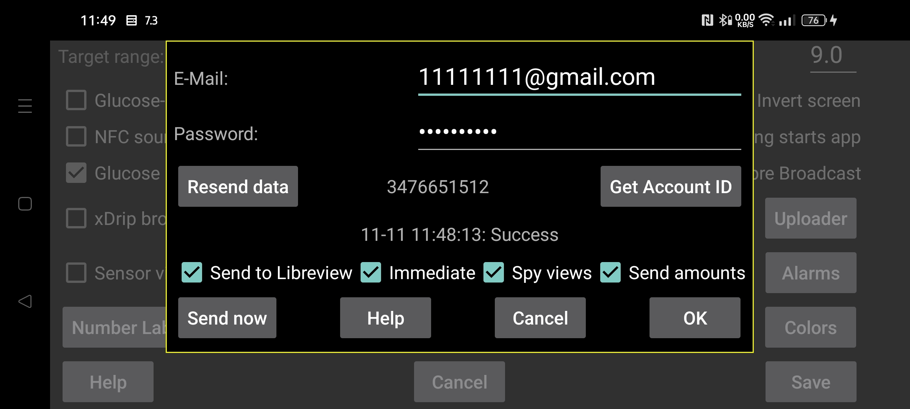

ar be de es fr hi it ja ko nl pl pt ru tr uk uz zh en
Juggluco может отправлять данные глюкозы и введенные количества в Libreview.
Как и приложение LibreLink, он отправляет в Libreview данные за последние 89 дней.
Чтобы использовать эту службу, нужно создать учетную запись Libreview на https://libreview.com и указать здесь ее E-mail и пароль. Не отправляйте данные за один и тот же период в одну учетную запись LibreView из нескольких источников, например одновременно из приложения LibreLink и Juggluco. Существующие устройства можно удалить в LibreView в Account Settings→My devices. Также можно создать новую учетную запись LibreView.
Чтобы включить отправку, нужно также отметить Отправлять в Libreview.
Juggluco отправляет новые данные в Libreview каждый раз, когда вы уходите из приложения, если он не делал этого в предыдущие 20 минут. Также можно отправить вручную, нажав Отправить сейчас.
Кроме значений глюкозы, в Libreview можно отправлять и количества. Для этого нужно нажать Отправлять количества и указать, что означает каждая метка.
RU: включите это, если используете https://libreview.ru вместо https://libreview.com. Это относится только к датчикам Libre 2. Датчики Libre 3 можно использовать только с libreview.com, потому что российского приложения Abbott Libre 3 нет.
Немедленно: отправлять значения глюкозы в Libreview сразу, когда они поступают от датчиков Libre 2 или 3. Это полезно только вместе с LibreLinkUp. Чтобы использовать это, нужно добавить соединение LibreLinkUp к этой учетной записи Libreview в одном из приложений Abbott Libre. Если приложения Abbott Libre нет в вашей стране, можно использовать patched Libre 3 app.
Иногда значение не видно сразу, потому что LibreLinkUp не обновляет экран автоматически. Будьте осторожны: LibreLinkUp может показывать устаревшие значения. Если коснуться графика, он показывает более старое измерение, а не текущее; это легко неправильно прочитать, если не смотреть внимательно.
Spy Views: если параметр включен, Juggluco будет отправлять в Libreview информацию о том, было значение просмотрено или нет. Если параметр выключен, Juggluco всегда сообщает, что значение не просмотрено. Надежно отправлять эту информацию в Libreview этот параметр сможет только когда также включено Немедленно. Juggluco должен быть постоянно подключен к интернету, чтобы поймать все просмотры от Libre 3; Libre 2 помнит их все, пока приложение не завершено.
Изменить начало: начать заново; повторно отправить данные с указанной даты и времени. Нажимайте это при переходе на новую учетную запись Libreview.
Результат последней попытки отправки в Libreview отображается под кнопкой Получить Account ID.
Libreview использует исторические значения для анализа, а Juggluco использует потоковые значения на экране статистики (левое среднее меню→Статистика). Это различие вызывает небольшие расхождения между Libreview и статистикой Juggluco. Поскольку потоковые значения более экстремальны, Juggluco несколько более негативен: меньше время в диапазоне, больше вариабельность. Время активности датчика по Juggluco также меньше, потому что учитывается каждое отсутствующее потоковое значение.
Juggluco может быть подключен к нескольким датчикам одновременно, тогда как LibreLink работает только с одним датчиком. Juggluco также отправляет в Libreview данные только одного датчика за раз: сначала отправляет данные одного датчика, а только когда для него больше нет данных — данные следующего. Когда Juggluco переключился на следующий датчик, он не возвращается к предыдущему, чтобы имитировать политику LibreLink «один датчик». Поэтому если вы носите несколько датчиков одновременно, и более новый датчик закончится раньше более старого, более старый уже не будет отправлять данные в Libreview.
Получить Account ID: если нужно только получить LibreView account ID, а не отправлять данные в Libreview, заполните E-mail и пароль и нажмите Получить Account ID. На той же строке перед этой кнопкой будет показан Account ID; это может занять некоторое время, и экран не обновляется автоматически. Получение Account ID с сервера LibreView позволяет использовать датчик FreeStyle Libre 3, уже использованный с приложением Abbott Libre 3, с этой учетной записью LibreView.
Номер Libreview account ID также можно преобразовать из UUID, показанного в адресной строке отчетов Libreview, и ввести в Juggluco вручную.
Данные от датчиков Sibionics и Dexcom не отправляются в Libreview.
Если нужно сохранить данные в формате Libreview, это также можно сделать в левое среднее меню→Экспорт или через веб-сервер Juggluco. Значения глюкозы от датчиков Dexcom и Sibionics также включаются.